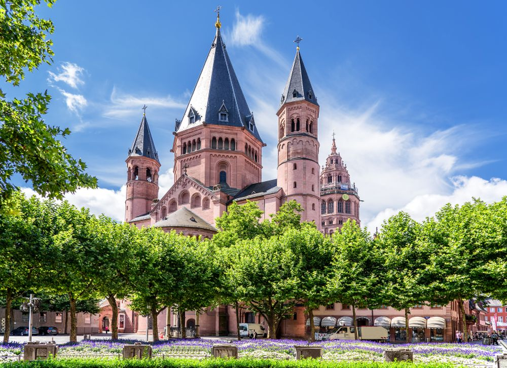
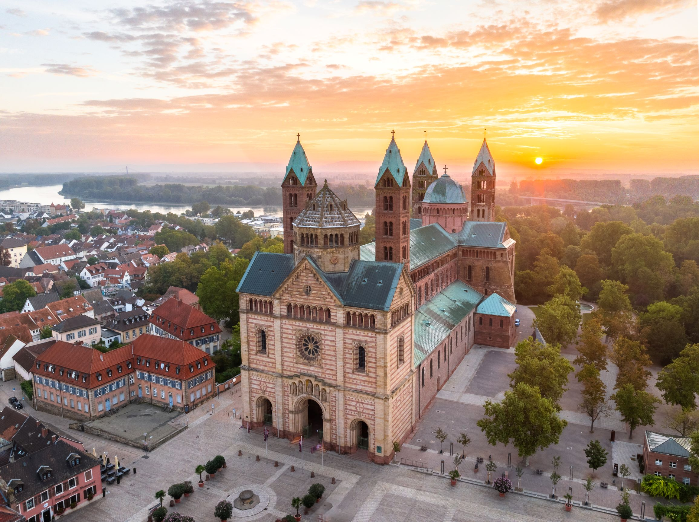

Mainzer Dom
Der Mainzer Dom gilt als eines der prägendsten Projekte, an denen Vino, Dubbi und Traubi ihre Zusammenarbeit perfektioniert haben.
Seit Generationen prägt unser Büro die Dom-Landschaft der Pfalz und ihrer Umgebung.
Was als kleine Werkstatt zwischen Weinbergen und Bahngleisen begann, hat sich zu einer
festen Größe im sakralen Bauwesen entwickelt. Jedes unserer Projekte erzählt eine
eigene Geschichte – von kühnen architektonischen Visionen über geduldige
Kundenbetreuung bis hin zur präzisen Koordination auf der Baustelle.
Drei Dome, drei Jahrhunderte, ein gemeinsamer Anspruch: Bauwerke zu schaffen, die Bestand haben.
Werfen Sie einen Blick auf unsere bisherigen Meisterwerke – und lassen Sie sich davon überzeugen,
dass gute Architektur, wie guter Wein, mit der Zeit nur noch besser wird.

Der Mainzer Dom gilt als eines der prägendsten Projekte, an denen Vino, Dubbi und Traubi ihre Zusammenarbeit perfektioniert haben.

Der Wormser Dom zeigt, wie viel Liebe zum Detail in der Arbeit des Büros steckt.

Kaum ein Projekt leigt dem Team so am Herzen wie der Speyrer Dom – einer der größten romanischen Kirchbauten Europas.